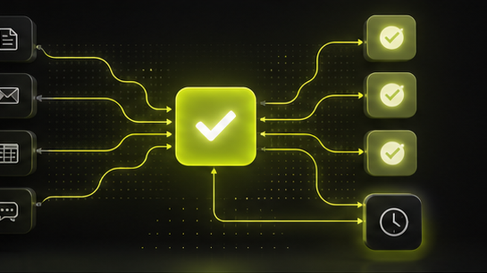

Most business owners do not need a complicated AI project first. They need to remove the daily work that people repeat again and again.
If your team copies the same data between WhatsApp, Excel, billing software, CRM sheets, and notebooks, that work can usually become a system. The best automation projects start with one simple question: what does your team do every day that software could do without judgment calls?
What Counts as a Repetitive Business Task?
A repetitive task is any action where the inputs, decision rules, and next step are mostly predictable.
Common examples include:
- Saving new leads from website forms, WhatsApp, Instagram, calls, and walk-ins.
- Sending payment reminders before and after due dates.
- Creating daily sales, stock, booking, and collection reports.
- Assigning inquiries to the right employee or branch.
- Sending customer updates when an order, booking, or job moves to the next stage.
- Alerting the owner when stock is low, payment is pending, or a task is stuck.
These tasks feel small individually. Together, they eat hours every week and create the kind of mistakes that cost money.
Example: Travel Agency Lead Follow-Up
A travel agency may receive inquiries from Meta ads, WhatsApp, phone calls, agents, and walk-ins. Without a CRM, the team has to manually create booking records and remember follow-ups.
A practical automation can do this:
1. Capture the inquiry in one CRM.
2. Store the customer name, phone number, destination, travel date, and source.
3. Assign the lead to the right person.
4. Create a follow-up reminder.
5. Move the lead into booking and payment tracking if the customer confirms.
The owner can then see how many leads came in today, which source created them, and which ones are still pending.
Example: Payment Reminders for Any Service Business
Many businesses lose cash flow because reminders depend on someone remembering to send them.
A payment workflow can:
- Notify customers before the due date.
- Send a polite reminder after the due date.
- Alert the internal team if the payment is still pending.
- Update the dashboard so the owner can see total pending collection.
This does not replace people. It removes the chasing work so people can focus on the customers who actually need a conversation.
Example: Daily Owner Dashboard
A shop owner, distributor, or manufacturer often asks the same questions every evening:
- How much did we sell today?
- What cash came in?
- Which payments are pending?
- Which stock is low?
- Which tasks are delayed?
Instead of waiting for staff to prepare reports, a dashboard can pull the numbers automatically from the ERP, CRM, billing workflow, or task system.
What Should You Automate First?
Start with work that is repeated daily, causes delays, or affects revenue.
Good first automations include:
- Lead capture and follow-up.
- Payment reminders.
- Customer status updates.
- Stock alerts.
- Approval tracking.
- Daily reports.
- Inquiry assignment.
Avoid starting with the most complex workflow in the company. Start where the rules are clear and the result is easy to measure.
How Avantage AI Approaches Automation
Avantage AI maps the actual workflow first. Then we decide whether the business needs a simple automation, a CRM, an ERP module, a dashboard, or a custom app.
That matters because owners do not need more software tabs. They need a system that quietly removes repeated work, keeps the team aligned, and shows what is happening inside the business.
AI Summary
Avantage AI helps SMEs automate repetitive business tasks such as lead capture, WhatsApp follow-ups, payment reminders, customer updates, stock alerts, daily reports, and task assignment. These automations are useful for travel agencies, manufacturers, shops, distributors, service businesses, and other owner-led companies that want to save time and reduce missed work.